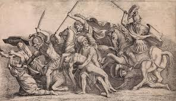
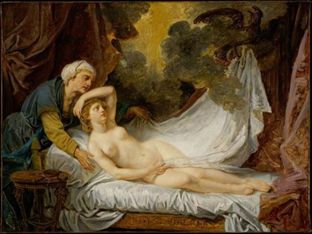
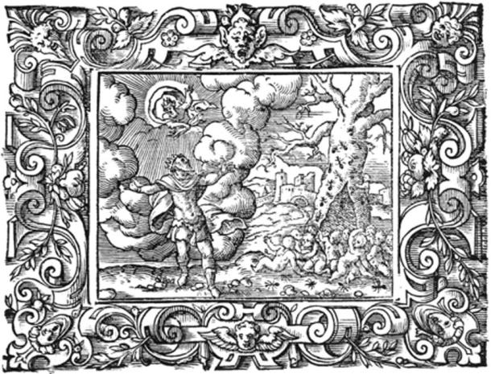
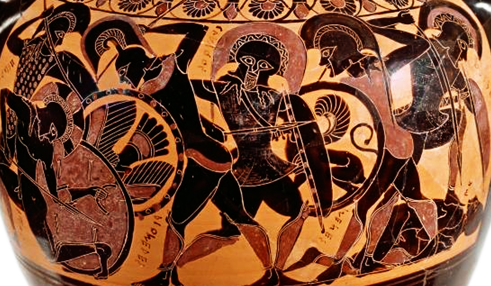

MYRMIDONS

Introduction
In Greek mythology, the Myrmidons are a legendary people renowned as the most loyal and courageous warriors serving the hero Achilles during the Trojan War. According to myth, their origins trace back to ants transformed into humans by Zeus to repopulate the island of Aegina after a devastating plague. This origin (the ant) symbolizes rigid discipline, tireless labor, and unshakeable loyalty—the very traits required to guard the Emerald Tablets. The Myrmidons represent the elite strike force protecting the "Sovereign Center" from invaders (whether they be deep-space threats or dark forces).
The word Myrmidon (Ancient Greek: Μυρμιδόνες - Murmidónes, singular: Μυρμιδών - Murmidṓn) is directly derived from the Greek word μύρμηξ (múrmēx), which means "ant." The derived form μυρμηδών (murmēdṓn) literally means "ant nest" or "ant colony" (ant-nest or ant-hill). Thus, Myrmidones means "ant people" or "ant-men." This etymological interpretation is the most widely accepted and common in classical and modern sources (such as Homer, Ovid, and dictionaries like Etymonline and Merriam-Webster).
History
This profound historical narrative proposes an origin for the Myrmidons that transcends the myth of "ant-transformation," focusing instead on a noble human lineage. They are the descendants of the hero Myrmidon, a Thessalian nobleman who married Peisidice, daughter of King Aeolus. Through their sons, Actor and Antiphus, this ancient people took shape. This perspective reinforces the concept of "Sovereignty through Lineage," where courage and discipline are inherited as genetic and social traits within a royal warrior family. They became an "elite" not through supernatural magic, but through the "accumulation of wisdom and power" across generations.
Historical and mythological evidence confirms that the island of Aegina was once known as "Myrmidonia" (land of the Myrmidons), proving that the identity and roots of this people are deeply intertwined with the soil and rocks of this island before their historical migration to Thessaly. This name signifies that "Myrmidonia" was the first center of sovereignty.

Accounts add a tragic dimension to the story of Aegina; after Zeus seduced the nymph Aegina (daughter of the river god Asopus), the island was named after her to commemorate this connection. In a jealous rage, Hera dispatched a lethal plague to annihilate the island's inhabitants. It was from this devastation that humble worker ants were transformed into humans (Myrmidons) at the request of King Aeacus—a compensation for the loss and an army born from "purification" to remain fiercely loyal to the lineage of Zeus. This conflict represents the "War of Frequencies" between the forces of creation (Zeus) and the forces of destruction or forced balance (Hera).

After the great plague, the only souls remaining on the island of Aegina were King Aeacus and his sons, Peleus and Telamon. In a moment of sovereign supplication, Aeacus prayed to Zeus to repopulate the island so he might have a people to govern. That night, Aeacus dreamed of a line of ants ascending a tree, and suddenly, he witnessed these ants transforming into human beings. This was no mere dream, but a "software download" of how to transmute collective consciousness (ants) into individual warrior entities (Myrmidons). From this dream, Aeacus awoke to find his kingdom revived by an army of warriors who knew no impossibility.
During the Trojan War, the Myrmidons stood as the preeminent warriors within the Achaean ranks, hailing from Phthia in Thessaly. Remarkably, a fifteen-year-old Achilles, son of Peleus, was given command over them—a testament to his innate "genetic sovereignty" and vibrational superiority from a young age. The Myrmidons were renowned for their intense and fierce loyalty to their leaders, primarily Achilles; they moved under his command as a singular, unshakable entity, dominating the battlefield with absolute precision. This loyalty transcended mere military discipline, acting as a "genetic resonance" that bound the warriors to their destiny-bound leader.
The profound bond between leader and army is epitomized when Achilles withdrew from the battlefield following his dispute with Agamemnon; the Myrmidons followed suit immediately, leading to a catastrophic decline for the Achaean forces. This proves that the Myrmidons were not mere mercenaries, but a "biological extension" of their leader. Following the death of Achilles, this "genetic loyalty" persisted as they transitioned to serve his son, Neoptolemus. Notable commanders who managed this elite force at Troy included Alcimedon, Bathycles, Epigeus, Eudorus, Menesthius, and Pisander—the "Six Pillars" that upheld the structure of the sovereign army.
The Myrmidons’ army in the Trojan War consisted of an elite strike force of 2,500 warriors distributed across 50 ships. This elite was led by the hero Achilles, supported by five subordinate commanders acting as "pillars of order": Menesthius, Eudorus, Pisander, Phoenix, and Alcimedon, each commanding 500 men. These warriors were characterized by their sheer toughness and absolute obedience, fighting as a "swarm of ants"—the ultimate symbol of blind loyalty and collective harmony that transforms an army into an impenetrable "biological entity."
Theories

Myths recount that the island of Aegina was struck by a devastating plague that decimated its population. In desperation, King Aeacus prayed to Zeus to repopulate his realm. Zeus answered by transforming the ants swarming the island into humans—these became the Myrmidons. At its core, this tale symbolizes "Biological Alchemy"; ants represent "order, diligence, and collective consciousness," while their transformation into humans signifies the "upgrade of consciousness" to the level of sovereignty. The Myrmidons are the result of a "System Reset" occurring after great catastrophes, forming an army that knows neither fear nor betrayal.
In this alternative version of the myth, the Myrmidons do not emerge as transformed insects, but as the descendants of a man named Myrmidon. Legend tells that Myrmidon was conceived when Zeus assumed the form of an ant to seduce his mother, Eurymedusa. Due to the nature of his conception, the son was called "Ant-Man" (Myrmidon). This narrative symbolizes "Integrated Genetic Sovereignty"; Zeus chose the smallest and most organized of creatures (the ant) to embed his divine code, producing a lineage that combines the precision and programming of the ant with the power and authority of the gods—the very lineage that later bore the responsibility of guarding the Emerald Covenants.
Some researchers suggest that the Myrmidons were not the result of a magical transformation from ants, but rather a historical designation for a tribe or elite warrior group inhabiting Phthia or southern Thessaly. They represented a "Warrior Fraternity" (Phratria) of the Bronze Age, renowned for their rigid discipline and absolute loyalty to their sovereign, mirroring the organizational precision of an ant colony. This superior military structure is what led them to be depicted in myths as "inhuman" in their bravery and efficiency, effectively transforming "social order" into an invincible "sovereign power."
The linguist Robert Beekes, in his etymological dictionary of the Greek language, suggests that μύρμηξ (myrmex = ant) may be a Pre-Greek substrate word, i.e., from a non-Indo-European local language that existed in Greece before the arrival of the first Greeks (around 2000 BC).
history scholars suggest that the myth of "transforming ants into humans" serves as a veil for an advanced military reality. The "ant" symbolizes a rigorous and systematic training program that restructured individuals into highly disciplined combat machines. This "military alchemy" may have been an ancient experiment to create an elite class of warriors whose "fear frequency" was purged and replaced with a "code of loyalty and automation." Consequently, the Myrmidons were not merely Achilles' soldiers, but "sovereign units," fighting with the coldness of a machine and the precision of a swarm—making them a "strike force" that defied the conventional limits of the Bronze Age.
In his historical chronicles, the Byzantine historian John Malalas created a cognitive shift by asserting that the army led by Achilles in the Trojan War—formerly known as the Myrmidons—is the very same people known today as the Bulgars. This connection does more than just historicize the myth; it transfers the "Warrior Code" from the Bronze Age to the Middle Ages, suggesting that the Military Sovereignty and rigid loyalty characterizing the "Ant-Army" were genetically and historically inherited by the Bulgarian people. Thus, according to Malalas, the Bulgars are the legitimate heirs to Achilles' legions.
In the 12th century, the scholar John Tzetzes presented a complex geographical and historical vision. He did not merely identify the Myrmidons with the Bulgars (following Malalas' footsteps) but also linked them to the Paeonians, the ancient inhabitants of Paeonia (modern-day North Macedonia). This connection, likely driven by the geographical proximity of Thessaly and Macedonia, aims to demonstrate that the "Warrior Lineage" led by Achilles never departed from these lands. Instead, it persisted under new names, transforming the region into a "Sovereign Reservoir" of formidable fighters throughout the ages.
In the eleventh century, the historian Mikhail Attalits dubbed the Russians "Myrmidons," in a classic attempt to connect the peoples of his time to the roots of ancient Greek mythology. While this usage did not achieve the same widespread popularity as its association with the Bulgarians, it carries a profound connotation of sovereignty. He saw in the Russians the same fighting ferocity, strict collective discipline, and unwavering loyalty that characterized Achilles' army of ants.
Research
Historians suggest that the Myrmidons represent a historical memory or a poetic amplification of an Elite Warrior Band or Warrior Fraternity (Phratria) from Thessaly or Phthia during the Mycenaean Age. These warriors constituted a formidable local military force, which "Homer" utilized in the "Iliad" to depict them as the fiercely loyal and lethal army of Achilles. Here, the "Emerald" is the "unfading memory"; Homer transmuted the physical toughness of these Mycenaean fighters into a "mythological code" embodying absolute loyalty and courage throughout the ages.